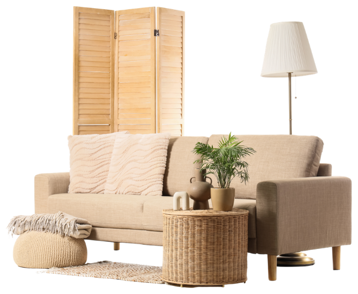
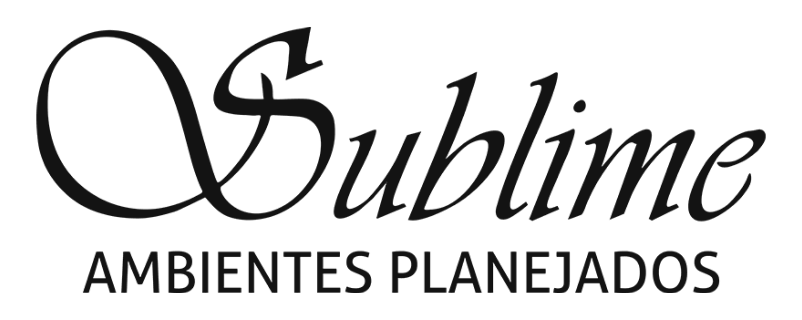

Quem Somos
A Sublime Ambientes é uma referência na região, destacando-se pela excelência, qualidade e atendimento personalizado. Com uma equipe apaixonada e uma história sólida, tornou-se sinônimo de sofisticação no setor de móveis personalizados. A empresa transforma ideias em peças únicas, adaptadas ao estilo dos clientes, atendendo necessidades práticas e refletindo a personalidade de quem as encomenda, tanto em ambientes residenciais quanto comerciais.